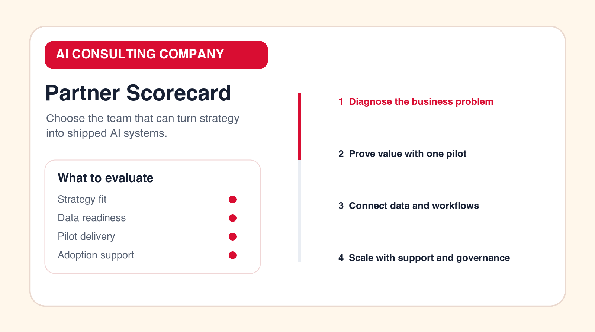

AI Automation Tools: 15 Tools and When You Need an Agency
AI automation tools can move work faster, but tools do not replace process design. This listicle explains 15 tool categories, what they automate, and when an AI automation agency is the better choice.

Buying principle
Choose tools after the workflow is clear. Use an agency when the workflow, data, or rollout needs design.
Topic
AI automation tools
Decision focus
Implementation planning
Format
15-tool listicle
Conversion angle
Agency when tools are not enough
TL;DR
AI automation tools are useful when the workflow is already understood. Tool categories include workflow builders, AI agents, document processing, CRM automation, support AI, sales automation, reporting, knowledge search, RPA, data integration, approvals, and governance. You need an AI automation agency when the use case is unclear, the data is messy, integrations are custom, AI agents need guardrails, or the team needs help launching and supporting the workflow.
AI automation tools can make a business faster, but they do not decide what should be automated. That decision still requires process thinking. Before buying a tool, define the workflow, the owner, the input, the output, the review point, and the metric that will prove the automation is useful.
This guide uses tool categories instead of pretending one product is best for every business. The right stack depends on your systems, data quality, process maturity, internal skills, security requirements, and budget. Use the list to understand what each tool type does and when an AI automation agency should help.
The common mistake is buying tools in isolation. A team buys an AI writing assistant, a workflow builder, a chatbot, a document extractor, and a reporting tool, but nobody designs how those tools fit into one operating workflow. The result is more software, more logins, more disconnected outputs, and not enough measurable business improvement.
A better approach is to start with the business process. What work repeats? Where does delay happen? Which information needs to move? Which outputs require review? Which systems must stay the source of truth? Once those answers are clear, the tool category becomes easier to choose.
AI Automation Tools at a Glance
| Tool type | Best for | Agency needed when |
|---|---|---|
| Workflow builders | Connecting apps and moving data. | The workflow is unclear or risky. |
| AI agents | Multi-step research, drafting, and task handling. | Permissions and review paths need design. |
| Document AI | Extraction, classification, and review preparation. | Documents are sensitive or inconsistent. |
| Reporting AI | Summaries, dashboards, and exception alerts. | Data sources need cleanup or integration. |
How to Choose AI Automation Tools Before You Buy
Start by writing the workflow in one paragraph. Name the trigger, input, systems, AI task, human review point, output, owner, and metric. If you cannot write that paragraph, you are not ready to choose a tool. You may need AI consulting or process mapping first.
Next, decide whether the tool needs to act, assist, or analyze. A tool that acts might create a task, update a record, route a request, or send a message. A tool that assists might draft a reply, summarize a document, or recommend a next step. A tool that analyzes might identify trends, flag exceptions, or explain performance changes. These are different jobs and may require different tools.
Then check integration depth. The tool should connect to the systems where work already happens, such as CRM, help desk, email, documents, finance, project management, data warehouse, or internal applications. A tool that requires people to copy information manually may not be automation. It may simply move the manual work to another screen.
Finally, check ownership. Who configures the tool? Who reviews AI output? Who updates prompts, rules, connectors, and knowledge sources? Who monitors failures? If nobody owns the tool after launch, adoption will fade even if the demo looked strong.
What a Practical AI Automation Tool Stack Includes
A practical AI automation stack usually has several layers. The first layer is the system of record, such as CRM, help desk, finance, document storage, or project management. The second layer is workflow automation, which moves work between systems. The third layer is AI, which classifies, extracts, summarizes, drafts, or recommends. The fourth layer is human review, where people approve sensitive outputs. The fifth layer is reporting and monitoring.
Many failed AI automation projects skip the middle layers. They connect a model to a prompt and call it automation. But real business automation needs triggers, permissions, logs, error handling, user experience, and support. The tool stack should make the whole process work, not only create an AI output.
This is why the best tool choice depends on your first workflow. A support team may need ticket triage, knowledge retrieval, and suggested replies. A finance team may need document extraction, approval routing, and exception logs. A sales team may need lead enrichment, CRM updates, meeting summaries, and follow-up drafting. Each workflow needs a different stack.
1. Workflow Automation Builders
Workflow builders connect triggers and actions across business apps. They can move form submissions into CRMs, send notifications, create tasks, route approvals, update spreadsheets, and pass information between tools. They are often the fastest way to automate a clear process.
You need an agency when the workflow is not clear enough to configure, when the automation touches sensitive decisions, or when the process spans several systems with exceptions that are not handled by simple rules.
Workflow builders are often the backbone of an automation stack because they connect events to actions. They can be used before advanced AI is added. For example, routing a lead to the right owner or creating a task from a form submission may not need AI at all. Starting with these simple wins can make later AI work easier because the process becomes more structured.
The buying question is whether the builder can handle your actual systems and exceptions. Look for reliable logs, retry behavior, permission controls, field-level mapping, and clear error messages. If the tool only works when every input is perfect, it may fail in daily operations.
2. AI Agent Builders
AI agent builders help create agents that can reason through a task, use tools, gather context, draft outputs, and hand work back to a person. They can support research, operations queues, sales preparation, support triage, document review, and internal task handling.
You need an agency when the agent needs permissions, logs, review paths, integrations, and safe failure behavior. Agent work should be designed around tasks, not vague "AI employee" language.
AI agents are useful when the task has multiple steps. A simple automation might say, "When a ticket arrives, assign it to support." An agent might read the ticket, check account history, find the relevant policy, draft a response, and ask a human to approve. That extra capability is valuable only if it is controlled.
Agent builders should be evaluated on boundaries. What tools can the agent access? Can it write to systems or only read? Does it need approval before sending messages? Can it show its sources? Are actions logged? Can the business disable one tool without disabling the whole agent? These questions matter more than the promise that the agent can do many things.
3. Document Processing AI
Document AI tools classify files, extract fields, summarize records, compare terms, and prepare review. They are useful for invoices, contracts, applications, forms, claims, onboarding documents, and compliance records.
Use an agency when documents vary heavily, outputs need review, or extracted information must connect to finance, CRM, support, or approval systems.
Document AI can save time because many business workflows begin with files. Invoices, contracts, onboarding forms, applications, claims, resumes, service requests, and compliance evidence all contain information that someone would otherwise read and copy. AI can prepare that information for review.
The tool should show where extracted fields came from. If it identifies an amount, due date, clause, or name, the reviewer should be able to verify the source. This is especially important in finance, legal, HR, and compliance workflows. Extraction without traceability creates risk.
4. CRM Automation Tools
CRM automation tools update records, assign leads, create tasks, send reminders, score accounts, and keep pipelines cleaner. AI can summarize calls, enrich companies, draft follow-up notes, and flag stale opportunities.
You need an agency when CRM data is messy, the sales process is inconsistent, or automation decisions affect high-value opportunities.
CRM automation can remove a large amount of sales administration. AI can summarize calls, suggest follow-up tasks, enrich account context, detect stale opportunities, and prepare account notes. But CRM automation should support sellers, not create a compliance burden that makes them avoid the system.
The best first CRM automation is usually a workflow the sales team already wants fixed: faster lead response, cleaner handoffs, fewer missed follow-ups, or better meeting notes. If the automation only helps management reporting and adds work for sellers, adoption will be weaker.
5. Support AI and Ticket Triage Tools
Support AI tools classify tickets, identify urgency, suggest replies, find knowledge articles, summarize customer history, and route requests. They are useful when support volume is high and ticket categories repeat.
Use an agency when support policies are complex, knowledge sources need cleanup, or AI responses need approval rules before they reach customers.
Support AI is often one of the clearest tool categories because ticket volume creates obvious manual work. The system can classify issues, detect urgency, summarize customer history, recommend knowledge articles, and draft internal notes. This reduces the time agents spend preparing to answer.
Start with internal assistance before full customer automation. Suggested replies, routing, and knowledge recommendations are safer first steps. Automatic replies should come later, after the team has tested categories, policies, escalation paths, and customer experience.

6. Sales Automation Tools
Sales automation tools help with lead routing, follow-up reminders, email drafts, meeting summaries, proposal preparation, and account research. AI can reduce repetitive preparation and help salespeople respond faster.
You need an agency when sales workflows cross multiple tools, messaging needs quality control, or automation must fit a specific sales methodology.
Sales automation tools are strongest when they reduce preparation time and improve follow-through. They can help with prospect research, call summaries, proposal drafts, CRM updates, and follow-up reminders. The goal should be better sales execution, not more generic outbound volume.
Be careful with automated messaging. Poorly controlled AI outreach can damage trust quickly. A good workflow keeps humans involved in messaging strategy, account prioritization, and high-value opportunities. AI should prepare and assist, not blindly send.
7. Marketing Automation Tools
Marketing automation tools manage forms, segmentation, nurturing, campaign logic, lead scoring, and handoff to sales. AI can help draft variations, classify leads, summarize campaign results, and identify follow-up opportunities.
Use an agency when marketing automation must connect tightly with sales, CRM fields, reporting, and human follow-up rules.
Marketing automation tools can manage lead capture, segmentation, nurturing, campaign triggers, scoring, and handoff to sales. AI can help write variations, summarize performance, classify inquiries, and suggest next campaign actions. The tool becomes more valuable when it is connected to the revenue process.
The main risk is building automation that looks active but does not create qualified conversations. Measure lead quality, handoff speed, conversion, and sales acceptance. More emails or more content does not necessarily mean better automation.
8. Robotic Process Automation Tools
RPA tools automate repetitive screen-based tasks, especially when older systems do not have modern APIs. They can copy data, open files, update records, and run routine back-office actions.
You need an agency when the process is brittle, regulated, or connected to several legacy systems. RPA can save time, but it needs monitoring because user interfaces change.
RPA is useful when a business must automate around older systems that do not expose modern APIs. It can mimic repetitive actions that people take through a user interface. That can create value quickly, especially in back-office processes.
The tradeoff is fragility. If a screen changes, a button moves, or a field label changes, the automation may fail. RPA should include monitoring, alerts, and a fallback process. For critical workflows, consider whether a deeper integration would be more reliable over time.
9. Data Integration and iPaaS Tools
Data integration tools move and transform information between systems. They are useful when AI automation depends on clean records, consistent fields, and reliable source data.
Use an agency when data ownership, mapping, quality, or security rules are unclear. AI automation is weaker when the data layer is unreliable.
Data integration is often invisible until it fails. AI automation depends on reliable data movement between systems. If account names, customer IDs, invoice numbers, product codes, or support categories do not match, the automation may produce bad outputs even if the AI model is strong.
Evaluate data tools by mapping quality, transformation rules, monitoring, error handling, and ownership. A clean data layer makes every other automation tool more useful.
10. Knowledge Search and Retrieval Tools
Knowledge retrieval tools help employees find answers inside internal documents, policies, tickets, and knowledge bases. They are useful for support, onboarding, operations, and compliance-heavy workflows.
You need an agency when the knowledge base is outdated, permissions matter, or answers must cite sources and avoid unsupported claims.
Knowledge search tools are valuable when employees repeatedly ask the same questions or waste time finding policy, process, or product information. Retrieval-based AI can answer from approved sources and show citations. This is useful for support, onboarding, sales enablement, compliance, and operations.
The hard part is source quality. If the knowledge base contains outdated or conflicting documents, AI can surface confusion faster. Before launch, decide which sources are trusted, which should be archived, and who owns updates.
11. Reporting and Analytics Automation Tools
Reporting tools gather data, create dashboards, summarize performance, and flag exceptions. AI can draft weekly updates and explain changes in plain language.
Use an agency when reporting depends on several messy systems or when leaders need a new metric model before dashboards are useful.
Reporting automation should explain what changed, not only display numbers. AI can draft weekly summaries, identify anomalies, compare periods, and highlight accounts, tickets, invoices, or projects that need attention. This can save managers time when reporting is currently manual.
The tool should connect to trusted data sources and make assumptions visible. If the report mixes incomplete data with confident language, it can mislead leaders. Start with one recurring report and validate every output before expanding.
12. Approval Workflow Tools
Approval tools route requests for review, collect comments, capture decisions, and keep status visible. AI can prepare summaries, check missing fields, and flag policy issues before the approver reviews.
You need an agency when approval rules are complex, sensitive, or tied to finance, legal, HR, or customer commitments.
Approval tools are strongest when they reduce missing context. Instead of sending a vague request to a manager, the workflow can gather required fields, summarize the reason, attach supporting documents, and flag policy issues. AI can prepare the decision, while the approver stays accountable.
Good approval automation also creates an audit trail. The business should know who requested, who reviewed, what changed, when approval happened, and what evidence supported the decision. This is especially important for finance, legal, procurement, and regulated workflows.
13. No-Code Databases and Internal Tools
No-code databases and internal tool builders are useful when teams need lightweight operational apps, queues, dashboards, and review surfaces. They can become the workspace where automation results are reviewed.
Use an agency when the internal tool needs role-based access, custom UX, AI review flows, or integration with several systems.
No-code internal tools are useful when employees need a lightweight interface for reviewing automation outputs. For example, an AI system may extract invoice fields, but a finance reviewer still needs a queue to approve exceptions. A support triage system may classify tickets, but a team lead may need a view of urgent cases.
The risk is creating another shadow system. If the no-code tool becomes disconnected from the source of truth, people may not know where work actually lives. Design the tool as a review surface or operational layer, not a duplicate database unless that is intentional.
14. Communication and Notification Automation Tools
These tools send updates to email, chat, SMS, or project systems when something changes. AI can summarize the event, explain urgency, and recommend the next action.
You need an agency when alerts create noise, escalation logic is unclear, or communications must be tailored to different teams.
Communication automation can make work visible, but it can also create noise. The best alerts are specific, timely, and actionable. They tell the right person what changed, why it matters, and what to do next. AI can help by summarizing the context instead of sending raw system updates.
Before buying notification tools, define escalation rules. Which events deserve immediate alerts? Which should appear in a daily digest? Which should become tasks? Which should be ignored? Without these rules, automation can make people tune out.
15. AI Governance and Monitoring Tools
Governance tools help track AI usage, prompts, outputs, access, approvals, and performance. They matter more as AI automation moves from small pilots into production workflows.
Use an agency when you need to define what should be monitored, who owns exceptions, and how the company expands AI automation without losing control.
Governance tools become more important as automation expands. A company may start with one AI-assisted workflow, but soon it has agents, prompts, document processors, dashboards, and internal assistants. Without monitoring, leaders may not know where AI is used, what data it touches, or how outputs are reviewed.
Governance does not need to be heavy for a first pilot. Start with simple controls: owner, scope, approved data sources, human review rules, logging, known limitations, and success metrics. As more workflows launch, the company can add stronger monitoring and policy controls.

When You Need an AI Automation Agency
You need an agency when the question is not simply which tool to buy. If the team needs help choosing the first use case, mapping the workflow, cleaning data, designing human review, connecting systems, building AI agents, or training users, agency support can prevent wasted software spend.
The agency should not make the project more complicated. The right partner should help you choose one workflow, build a controlled pilot, measure the result, and then decide whether to expand. That is how tools become operating systems instead of subscriptions.
An agency is most useful when the business needs translation between operations and technology. Teams often know the pain but cannot define the automation. They know leads are slow, tickets are messy, invoices take too long, or reports are manual, but they do not know which tool category should solve the problem. A good agency turns that pain into a workflow brief and a build plan.
Agency support is also useful when the tool stack crosses several categories. A project may need document AI, workflow automation, CRM updates, approval routing, and reporting. Buying those tools separately without architecture can create more complexity. An agency can design the system so each tool has a clear role.
The final reason to use an agency is adoption. Automation changes habits. Users need to know what the system does, what they should review, and how to report problems. A good rollout can be the difference between a tool that becomes part of daily operations and a tool that quietly disappears.
AI Automation Tool Selection Checklist
- Define the first workflow before comparing platforms.
- Choose the tool category that matches the workflow, not the trendiest AI feature.
- Confirm integrations at the field and action level.
- Check whether AI outputs can be reviewed, corrected, logged, and limited.
- Make sure the tool shows errors, failed runs, and exceptions clearly.
- Define who owns the tool after launch.
- Measure business results, not only automation activity.
- Use an agency when workflow design, custom integration, or AI agent guardrails are needed.
This checklist prevents tool-first buying. If the first workflow is vague, every tool will look possible. If the workflow is clear, the weak options become obvious quickly. The best tools fit into the way the business needs to work.
Implementation Roadmap: From Tool Choice to Working Automation
Start with a workflow audit. Identify repeated tasks, manual handoffs, slow approvals, duplicate data entry, missed follow-ups, and recurring reports. Rank them by volume, pain, risk, data readiness, and owner commitment. Do not start with the most complex process if a smaller workflow can prove value faster.
Next, choose the tool category. A workflow builder may be enough. A document tool may be required. An AI agent may be useful. A reporting tool may solve the visible pain. A custom internal tool may be needed for review. Choose the category based on the workflow, not the marketing promise.
Then build a pilot. Keep it narrow. Use real examples. Include edge cases. Define the review path. Train a small group of users. Measure whether the workflow is faster, clearer, and more reliable. If the pilot works, expand the pattern. If it does not, fix the process before buying more tools.
The final step is support. Automation needs maintenance. Connectors break, fields change, knowledge sources get outdated, and business rules evolve. Decide who updates the workflow, who monitors errors, and how new automation ideas enter the backlog.
The roadmap should include a decision gate before expansion. After the pilot, review what changed for the people doing the work. Did the workflow reduce manual effort? Did it improve response time? Did users trust the AI output? Did exceptions become visible? Did the tool create new admin work somewhere else? The next tool purchase should depend on those answers, not only on whether the first automation was technically possible.
If the pilot works, document the pattern. Save the workflow brief, data sources, prompts or rules, approval logic, test examples, error-handling steps, and reporting metrics. This documentation makes the second automation faster. It also protects the business if the original builder leaves, the agency hands over the work, or the tool admin changes roles.
If the pilot does not work, avoid blaming the tool too quickly. The issue may be the wrong workflow, unclear ownership, poor data, weak review design, or an AI role that was too broad. Fix the operating design before replacing the platform. Tool switching can become expensive when the real problem is workflow clarity.
AI Automation Tools to Avoid
Avoid tools that cannot explain where AI outputs come from. In business workflows, source visibility matters. If a system summarizes a customer issue, extracts an invoice field, recommends a route, or drafts a response, users should be able to see the context behind it. A tool that hides reasoning and sources may create trust problems.
Avoid tools that require too much manual copying. If employees still need to move outputs between systems by hand, the tool may be an assistant but not a true automation layer. Manual transfer also creates errors and weakens reporting because the workflow state is split across systems.
Avoid tools with unclear ownership and weak logs. If nobody can see what ran, what failed, who approved, or what changed, the tool will be hard to support. This becomes more serious when AI agents or customer-facing workflows are involved.
Avoid tools that promise full autonomy before the business has defined review rules. Most companies need staged autonomy. AI can suggest, draft, classify, summarize, or prepare first. Then, as trust improves, some low-risk actions can become automatic. A tool that pushes immediate hands-off automation may create unnecessary risk, especially in customer service, finance, HR, and compliance workflows.
Avoid tools that cannot fit into your existing systems of record. If a sales workflow does not update the CRM, the CRM becomes less reliable. If a support workflow does not update the help desk, ticket history becomes incomplete. If a finance workflow stores approval context outside the finance system, audit trails become harder. The right AI automation tool should strengthen the source of truth, not compete with it.
Build a Governed Stack, Not a Pile of Tools
A governed AI automation stack has a clear purpose for each layer. The CRM remains the customer source of truth. The help desk remains the support source of truth. The workflow layer moves work. The AI layer prepares or recommends outputs. The review layer keeps people accountable. The reporting layer shows whether the system improves operations.
This structure prevents tool sprawl. Without it, different teams may buy separate AI tools that solve local problems but create company-wide confusion. A governed stack does not mean slow bureaucracy. It means each tool has an owner, a workflow, a data boundary, and a measurable role.
The stack should grow from successful pilots. Start with one workflow, prove value, document the pattern, then expand. Each new tool should either support an existing workflow or enable a clearly prioritized new one. This keeps AI automation tied to business outcomes rather than software collection.
A governed stack also needs a request process. Employees will find more automation ideas once the first pilot works. Without a request process, ideas arrive as scattered Slack messages, side projects, or disconnected tool trials. A simple intake form can capture the workflow, current pain, systems involved, owner, risk, and expected value. That is enough to compare ideas and choose the next build.
Governance should include retirement too. Some automations become unnecessary when a process changes, a product line ends, a system is replaced, or a team reorganizes. Retiring old automations keeps the stack clean and reduces support burden. The best AI automation tools make it easy to see which workflows are active, who owns them, and whether they are still producing value.
Free AI tool stack check
Find the tools you need and the ones you can skip.
Put your work email below and we will send a quick first-pass review path for your AI automation stack.
FAQ: AI Automation Tools
What are AI automation tools?
AI automation tools use AI, workflow logic, integrations, agents, and rules to reduce manual work in business processes. They can classify, route, summarize, draft, extract, update, notify, and monitor work.
What AI automation tool should I start with?
Start with the tool category that matches your first workflow. If you need to connect apps, start with workflow automation. If you need to process documents, start with document AI. If the use case is unclear, start with consulting before buying tools.
When do I need an AI automation agency?
You need an agency when the workflow needs design, data is messy, integrations are custom, AI agents need guardrails, or your team needs help with pilot planning, build, testing, training, and support.
Are AI agents the same as automation tools?
No. AI agents are one type of automation tool. They are useful for multi-step tasks, but many workflows only need rules, integrations, document processing, reporting, or approval automation.
Can Go Expandia help choose AI automation tools?
Yes. Go Expandia helps businesses choose the right AI automation tools, design pilots, build AI agents and custom workflows, connect systems, and support rollout after launch.
Ready to Choose the Right AI Automation Tools?
Go Expandia helps companies choose tools, design workflows, build AI agents, and launch measurable automation pilots.